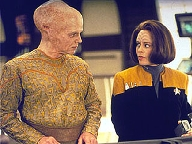
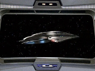
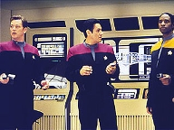
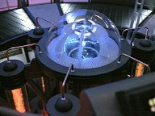
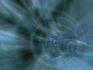
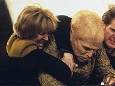
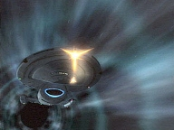

| MANCHETE
DO EPISÓDIO
Frota
pode ter mandado nave-resgate
Episódio
anterior | Próximo episódio Sinopse:
Data Estelar: 51978.2  Paris
e Neelix retornam de uma colônia comercial com um passageiro chamado Arturis.
Ele domina mais de quatro mil línguas e Janeway, interessada no assunto,
concorda em lhe dar carona até o sistema vizinho. Quando o visitante estuda a
mensagem sigilosa que a Voyager recebeu da Federação pela estação Hirogen,
consegue decodificá-la imediatamente. Entre as informações, encontra um grupo
de coordenadas. A Voyager parte em dobra e, ao chegar, descobre uma nave da
Frota à sua espera.
Embora não haja tripulantes a bordo, a nave é
identificada como USS Dauntless. O leme está pré-programado e a Engenharia
equipada com uma tecnologia chamada "dispositivo de quantum slipstream".
O resto da mensagem da Frota explica que a Dauntless foi enviada para levar a
tripulação para casa. Janeway ordena que seus oficiais modifiquem a Voyager
com a tecnologia, mas também sente que há algo errado nessa história toda.
Ela pede que Tuvok fique de olho em Arturis.
 A capitã volta ao laboratório de astrométricas e
consegue reconstruir o último segmento do bloco de dados da Frota. Não há
qualquer menção à Dauntless, apenas informações sobre o Quadrante Delta que
os almirantes esperam ser úteis na busca por uma fenda espacial. Na Engenharia
da outra nave, Kim descobre tecnologia alienígena atrás de um anteparo. É a
confirmação de que Arturis fabricou aquilo tudo. Janeway, Seven e Tuvok se
armam e rumam para a Ponte da Dauntless para confrontar o passageiro.
Quando uma equipe de segurança tenta levar Arturis para a
prisão, ele ativa o dispositivo de "slipstream". Kim consegue
transportar Tuvok e os grupos avançados para a Voyager, mas Janeway e Seven
são feitas reféns. O alienígena, agora hostil, diz que seu povo lutava contra
a assimilação dos Borgs quando a capitã ofereceu à Coletividade as
nanossondas modificadas para atacar a Espécie 8472. Aquela raça era a última
esperança que restava ao povo de Arturis. Agora, como vingança, ele está
levando as duas para o espaço Borg.  Seven adapta
seus implantes e consegue passar por um campo de força. Ela liberta Janeway e
as duas tentam tomar o controle da nave. No último instante, a Voyager chega e
abre fogo. Janeway e Seven são transportadas de volta, e Arturis entra no
espaço Borg sozinho. Infelizmente, as modificações nos motores de dobra
danificam demais a Voyager. Os engenheiros concluem que a tecnologia não
poderá ser usada para os levar de volta para casa.
Comentários:
"Hope
and Fear" tem meandros interessantes. Mas sofre de uma maldição bem
própria de Voyager. É um segmento completamente previsível. De
imediato, o telespectador sabe que a nave não voltará para casa,
independentemente do que se apresentará em tela. Já passamos por isso antes.
É o problema maior da premissa original. Toda vez que os roteiristas decidem
trabalhar o tema "retorno ao Quadrante Alfa", fica implícito que o
fã deve ignorar o desfecho e acompanhar a história minuto a minuto. O que
importa aqui é a viagem, não a chegada. O mesmo se viu em "Eye
of the Needle", "Prime Factors",
"The 37's", "Threshold",
"False Profits" e "Future's
End".
 Mas não dá para negar que a isca é mais tentadora. De
repente, há uma nave disponível para levar a tripulação à Terra. Não só
isso, mas decidem escrever essa história às portas do quinto ano. Para os
norte-americanos, que naturalmente acompanharam a primeira exibição, havia a
possibilidade de a temporada seguinte tratar justamente do retorno e suas
conseqüências. Tinha muito potencial nesse sentido. Como a Frota trataria os
Maquis? Como a Voyager se adaptaria ao contexto da Guerra Dominion? A capitã
responderia por suas violações de protocolo? Haveria um crossover com Deep
Space Nine? Já que tudo era mantido a sete chaves no estúdio, teve gente
que acreditou nos rumores.
A princípio, o telespectador fica na defensiva, tentando
antever apenas como a tripulação da Voyager será enganada desta vez. A boa
surpresa é que não demora até Janeway perceber que se trata de uma trama
elaborada. E é assim que "Hope and Fear" se diferencia dos
exemplos citados. Neles, a frustração era jogada para o final.
 Aqui, o fã também deve ignorar o tema maior
(completamente descartável à série) e se concentrar nos pequenos elementos do
roteiro. São os conflitos humanos, a vulnerabilidade emocional, os medos e a
esperança o mérito do segmento. Tudo isso resumido em Janeway e Seven of Nine.
O episódio é delas e há grande avanço em sua relação. Duas cenas se
destacam; a primeira é quando Seven diz que não retornará para o Quadrante
Alfa. Para Janeway, ela apenas sente um medo natural de enfrentar o planeta
Terra, tendo em vista as dificuldades de adaptação aos 150 humanos da Voyager.
A capitã acha que a ex-Borg já caminhou muito em direção à sua humanidade e
não pode simplesmente voltar atrás. Não só isso, mas Seven não teria para
onde ir, nem com quem ficar no Quadrante Delta. A tripulante retruca, afirmando
que não caminhou na direção que a mentora quis, à sua imagem e com seus
ideais. "Deve ter percebido como temos a tendência a discordar",
diz.
Aqui, há um ótimo exemplo de continuidade. Retoma-se o conflito de
personalidades visto em "Hunters" e "Prey".
A outra cena de destaque é aquela que se passa na prisão. O
diálogo é todo muito bem executado e dirigido. Verdadeiramente emocionante.
Sua conclusão, com a inesperada piada de Seven, é impagável.
Além desses aspectos, a história
também merece aplausos pelo esforço em revisitar instantes anteriores da
temporada. É interessante saber que a aliança da Voyager com os Borgs em "Scorpion"
teve conseqüências negativas para povos do Quadrante Delta. A acusação de
Arturis, de que Janeway não consegue enxergar além dos interesses de sua
tripulação, soa bastante válida. Também agrada o
fato de os roteiristas terem aproveitado as mensagens enviadas pela Frota em "Hunters",
para, a partir daí, desenvolver "Hope and Fear". Aliás,
quanto a essas mensagens, foi magnífico o conteúdo pessimista da
transmissão original do almirante Hayes. "Desculpem, não temos nada
para vocês. Esperamos que consigam voltar para casa por conta própria".
Ou seja, não há respostas fáceis.
 Ponto alto também são os cenários, os
efeitos visuais e a Dauntless. Depois de presentear o telespectador com a
Prometheus, em "Message in a Bottle",
a produção apresentou um design totalmente inovador. Muito embora essa nave
não pertença, de fato, à Frota, é uma abordagem interessante, que, como
Chakotay bem colocou, foge aos padrões tradicionais.
Mas vamos aos furos no roteiro - e há vários.
Como é que Arturis tomou conhecimento da Voyager? Apesar de ser possível que
seu povo tivesse descoberto sobre a Espécie 8472, é muito improvável
que soubessem do envolvimento de Janeway na guerra. E partindo do pressuposto
de que essa remota possibilidade tivesse acontecido, como ele conseguiu seguir
a Voyager por meses e localizá-la, tendo em conta que a tripulação já
percorrera mais de 10.000 anos-luz? Só se pode deduzir que ficou seguindo a
nave de perto por meses, à espera de uma boa oportunidade de agir. Assim, em "Message
in a Bottle", descobriu
(sabe-se lá como) a mensagem criptografada.
 É inadmissível trabalhar com a hipótese de
que ele só descobrira de última hora tanto a localização da tripulação,
como a mensagem. Outra coisa: supondo que a Dauntless fosse legítima, não
parece coincidência demais a nave estar ali na esquina bem no momento em que
a capitã decifra a mensagem com Arturis? E, sobre o alienígena, não parece
excessivo demais que ele concentraria tamanho esforço apenas para se vingar?
Mas espere que há mais coincidências
notáveis. Depois de meses sem sucesso, Janeway convenientemente consegue
decodificar a mensagem da Frota no momento em que precisa comprovar seu
palpite sobre Arturis. A Voyager inexplicavelmente instala em tempo recorde a
nova tecnologia de propulsão e sai à caça do alienígena, perseguindo-o
até a porta dos Borgs. Só que - veja só - a tecnologia não pode ser usada
de novo, sem que se forneça qualquer explicação aceitável. No fim das
contas, para os roteiristas, toda a política do Quadrante Delta gira em torno
dos interesses da minúscula USS Voyager.
Uma triste limitação.
Citações:
Seven - "You are a frustrating
opponent. During the final round, after you dropped your phaser, you did not
look at the disk, and yet you were able to acquire the target."
("A senhora é um oponente frustrante. Durante o round final, depois que
derrubou o seu phaser, a senhora nem olhou para o disco, mas ainda assim
conseguiu acertar o alvo.")
Janeway - "Intuition."
("Intuição.")
Seven - "Intuition is a human fallacy. The belief that you can predict
random events."
("Intuição é uma falácia humana. A crença de que vocês podem prever
eventos aleatórios.")
Janeway - "Oh, belief had nothing to do with it. At some level,
conscious or otherwise, I was aware of several factors. The trajectory of the
disk after I hit the wall, the sound it made on its return, and the shadow it
cast on the hologrid."
("Oh, crença não tem nada a ver com isso. Em algum nível, consciente ou
não, eu estava a par de diversos fatores. A trajetória do disco depois que
bateu na parede, o som que fez no seu retorno e a sombra que projetou na
holograde.")
Seven - "Intriguing but implausible."
("Intrigante, mas implausível.")
Janeway - "I won, didn't I?"
("Eu ganhei, não ganhei?")
Chakotay - "Still hunting for buried
treasure?"
("Ainda está caçando o tesouro enterrado?")
Janeway - "We found the treasure, I just can't pick the lock. I've
tried over 50 decryption algorithms. Every time I piece together a datablock
ten more come unravelled. What did Starfleet send us? A map, the location of a
wormhole? If I could decode this toda, Chakotay, we could be home tomorrow.
Then again, it could be Admiral Chapman's recipe for the perfect pound cake."
("Encontramos o tesouro, só não consigo abrir o cadeado. Tentei mais de
50 algorítimos de decriptografia. Toda vez que eu junto um bloco de dados,
outros dez se desembaraçam. O que a Frota nos mandou? Um mapa, a
localização de uma fenda espacial? Se eu decodificar isso hoje, Chakotay,
poderíamos estar em casa amanhã. Por outro lado, pode ser a receita da
almirante Chapman para o perfeito bolo de fubá.")
Seven - "Species 116."
("Espécie 116.")
Arturis - "Is that what you call us?"
("É assim que nos chamam?")
Seven - "Yes. The Borg has never been able to assimilate them. Not yet."
("Sim. Os Borgs nunca conseguiram assimilá-los. Não ainda.")
Janeway - "Seven!"
("Seven!")
Arturis - "It's all right, Captain. The Borg Collective is like a
force of nature. You don't feel anger toward a storm on the horizon. You just
avoid it."
("Tudo bem, capitã. A Coletividade Borg é como uma força da natureza.
Você não sente raiva de uma tempestade no horizonte. Apenas a evita..")
Arturis - "Captain, I won't pretend to
know you well, but I am surprised you're not more encouraged by this discovery."
("Capitã, não tenho a pretensão de dizer que a conheço bem, mas estou
surpreso que não esteja mais animada com essa descoberta.")
Janeway - "I've learned to walk the line between hope and caution. We've
had other opportunities that didn't work out. But I will admit I'm leaning
toward hope this time."
("Aprendi a andar na linha entre a esperança e a cautela. Tivemos
oportunidades que não vingaram. Mas devo admitir que estou mais inclinada à
esperança desta vez.")
Seven - "Your enthusiasm is premature.
Voyager is a proven vessel. It would be reckless to abandon it so quickly."
("Seu entusiasmo é prematuro. A Voyager é uma nave comprovada. Seria
imprudente abandoná-la tão rápido.")
Kim - "Come on, where's that Borg spirit? We'll adapt."
("Qual é, Seven, onde está aquele espírito Borg? Vamos nos adaptar.")
Seven - "My Borg spirit gives me an objectivity you lack."
("Meu espírito Borg me dá a objetividade que lhe falta.")
Janeway - "All of this is just a little
too perfect. The alien genius with the answers to all our problems. A message
from Starfleet telling us everything we want to hear. A starship delivered
right to our doorstep. What more could we ask for? They even turned down the
beds. The only thing missing is chocolates on the pillows."
("Tudo isso é um pouco perfeito demais. O gênio alienígena com as
respostas para os nossos problemas. Uma mensagem da Frota nos dizendo tudo o
que queremos ouvir. Uma nave entregue na nossa porta. O que mais poderíamos
pedir? Eles até prepararam as camas. Faltam apenas os chocolates sobre os
travesseiros.")
Tuvok - "It does seem convenient."
("Realmente, parece conveniente.")
Janeway - "I can't put my finger on it, but from the moment this all
started I sensed something was wrong."
("Não posso ter certeza, mas no momento em que tudo isso começou eu senti
que algo estava errado.")
Seven - "Lieutenant, you seem eager to
return to Earth."
("Tenente, você parece ávida a retornar à Terra.")
Torres - "Eager? I wouldn't go that far."
("Ávida? Eu não iria tão longe.")
Seven - "You were a member of the Maquis. Starfleet Command will no
doubt hold you responsible for a multitude of crimes. You will find nothing on
Earth but adversity."
("Você era um membro dos Maquis. O Comando da Frota Estelar sem dúvida
irá responsabilizá-la por uma série de crimes. Não encontrará nada na
Terra, além de adversidade.")
Torres - "That's looking on the bright side. Let's put it this way:
I'd rather face the music back home than spend the rest of my life in the
Delta Quadrant. What about you. Looking forward to seeing Earth?"
("Isso, olhando no lado bom. Vejamos desse jeito: prefiro encarar a dança
em casa do que passar o resto da minha vida no Quadrante Delta. E você?
Ansiosa para ver a Terra?")
Seven - "No."
("Não.")
Kim - "I'm not surprised. You think people are going to resent an
ex-Maquis? What about an ex-drone? We'll be outcasts together. I'm kidding,
Seven. It's a joke. Work on that sense of humour. It'll help you make friends
on Earth."
("Não estou surpresa. Você acha que vão se ressentir com uma ex-Maquis?
E uma ex-zangão? Seremos foras-da-lei juntas. Estou brincando, Seven. É uma
piada. Trabalhe nesse senso de humor. Vai lhe ajudar a fazer amigos na Terra.")
Seven - "Captain, I will not be going
with you to the Alpha Quadrant."
("Capitã, não irei com vocês para o Quadrante Alfa.")
Janeway - "I can understand your reluctance. It's been hard enough
dealing with a crew of a 150 individual humans. The prospect of an entire
planet must be overwhelming."
("Posso entender a sua relutância. Tem sido difícil lidar com uma
tripulação de 150 indivíduos humanos. O prospecto de um planeta inteiro
deve ser assustador.")
Seven - "I am not overwhelmed. I simply do not wish to live among
humans."
("Não estou assustada. Apenas não desejo viver entre humanos.")
Janeway - "Well, whether you like it or not, you're one of us. You've
come a long way from that drone who stepped out of a Borg alcove nine months
ago. Don't turn your back on humanity now. Not when you're about to take your
biggest step. Earth. Your home."
("Bom, goste ou não, é uma de nós. Você já caminhou bastante desde
aquele zangão que desceu de uma alcova Borg nove meses atrás. Não vire as
costas para a sua humanidade agora. Não quando está prestes a dar o seu
maior passo. Terra. Seu lar.")
Seven - "I may have come a long way, but not in the direction you
think. You've attempted to influence my development. You exposed me to your
culture and ideals. You hoped to shape me in your own image, but you have
failed."
("Eu posso ter caminhado bastante, mas não na direção que a senhora
pensa. Tentou influenciar o meu desenvolvimento. A senhora me expôs à sua
cultura e ideais. Esperou me moldar em sua própria imagem, mas falhou.")
Almirante Hayes - "Apologies from
everyone at Starfleet Command. We've had our best people working around the
clock, trying to find a wormhole, a new means of propulsion, anything to get
you home. But despite our best efforts... I know it's not what you were hoping,
but we've sent you all the data we've collected on the Delta Quadrant. With
any luck, you'll find at least some part of it useful. Maybe enough to shave a
few years off your journey. Safe journey. We hope to see you soon."
("Apologias de todos no Comando da Frota. Colocamos os melhores trabalhando
dia e noite para tentar achar uma fenda espacial, um novo meio de propulsão,
qualquer coisa que os trouxesse para casa. Mas, apesar dos nossos melhores
esforços... Sei que não é o que esperavam, mas lhes mandamos todos os dados
que coletamos sobre o Quadrante Delta. Com sorte, acharão pelo menos parte
deles útil. Talvez o suficiente para cortar alguns anos da sua jornada. Boa
jornada. Esperamos vê-los logo.")
Janeway - "Any ideas?"
("Alguma idéia?")
Seven - "Not presently."
("Não no momento.")
Janeway - "We'd better think of something. We come face to face with
your former family in less than an hour, and that's one reunion I'd like to
miss. Unless of course, you're looking forward to rejoining the Collective."
("É melhor pensarmos em algo. Estaremos cara a cara com sua antiga
família em menos de uma hora e essa é uma reunião que eu gostaria de
perder. A não ser, é claro, que queira voltar à Coletividade.")
Seven - "I do not believe I am."
("Não acho que eu queira.")
Janeway - "Not the ringing opposition I was hoping for, but I'll take
it."
("Não é a oposição veemente que eu esperava, mas aceitarei.")
Janeway - "In case I never get a chance
to say this, I realise I've been hard on you at times, but it was never out of
anger or regret that I brought you on board. I'm your Captain. That means I
can't always be your friend. Understand?"
("Caso eu nunca tenha a chance de dizer isso, sei que tenho sido dura com
você às vezes, mas nunca foi por raiva ou arrependimento de tê-la trazido a
bordo. Sou sua capitã. Isso significa que nem sempre posso ser sua amiga.
Entende?")
Seven - "No. However, if we are assimilated, our thoughts will become
one and I'm sure I'll understand perfectly. A joke, Captain. You, yourself
have encouraged me to use my sense of humour."
("Não. No entanto, se formos assimiladas, nossos pensamentos se tornarão
um e tenho certeza que entenderei perfeitamente. Uma piada, capitã. A senhora
mesma me encorajou a usar meu senso de humor.")
Janeway - "It's nice to know you've taken some of my advice to heart."
("É bom ver que levou alguns dos meus conselhos para o coração.")
Seven - "You were correct. My desire to remain in the Delta Quadrant
was based on fear. I am no longer Borg, but the prospect of becoming human is
unsettling. I don't know where I belong."
("A senhora estava certa. Meu desejo de permanecer no Quadrante Delta se
baseava no medo. Não sou mais Borg, mas o prospecto de me tornar humana é
inquietante. Não sei a que lugar pertenço.")
Janeway - "You belong with us."
("Seu lugar é ao nosso lado.")
Trivia:
 Ao desligar os novos motores, a Voyager fica três anos mais perto de casa.
Ao desligar os novos motores, a Voyager fica três anos mais perto de casa.
Em Voyager, apenas a primeira temporada e esta não se encerram com cliffhangers.
O registro da Dauntless é NX-01-A. Mais tarde, em Enterprise, seria
estabelecido que a NX-01 foi a primeira nave de dobra 5 da Frota.
Mesmo quando a Dauntless se reverte a sua aparência real, o casco externo
permanece com as inscrições da Frota. Na cela, Seven acessa um controle com
visual semelhante e as portas têm o estilo das da Voyager. Só se pode deduzir
que Arturis teve o imenso trabalho de replicar tudo.
Ray Wise foi Likos,
em "Who Watches the Watchers", da terceira temporada de A
Nova Geração.
Jack Shearer reprisa aqui seu papel como o
almirante Hayes. Ele havia interpretado o personagem
no filme "First Contact" e volta a fazê-lo em "Life
Line", também de Voyager. Em "Non Sequitur",
foi o almirante Strickler. Já em Deep Space Nine, fez o embaixador
Vadosia em "The Forsaken" e Ruwon em "Visionary".
Ficha
técnica: Direção de
Winrich Kolbe
Adaptação por Brannon Braga e Joe Menosky
Exibido em
20/05/1998
Produção: 094 Elenco: Kate
Mulgrew como Kathryn Janeway
Robert Beltran como
Chakotay
Roxann Biggs-Dawson como B'Elanna Torres
Robert
Duncan McNeill como Tom Paris
Ethan Phillips como
Neelix
Robert Picardo como Doutor
Tim Russ
como Tuvok
Jeri Ryan como Seven of Nine
Garrett Wang como Harry Kim Elenco
convidado: Ray Wise como
Arturis
Jack Shearer como almirante Hayes
Episódio
anterior | Próximo episódio
|